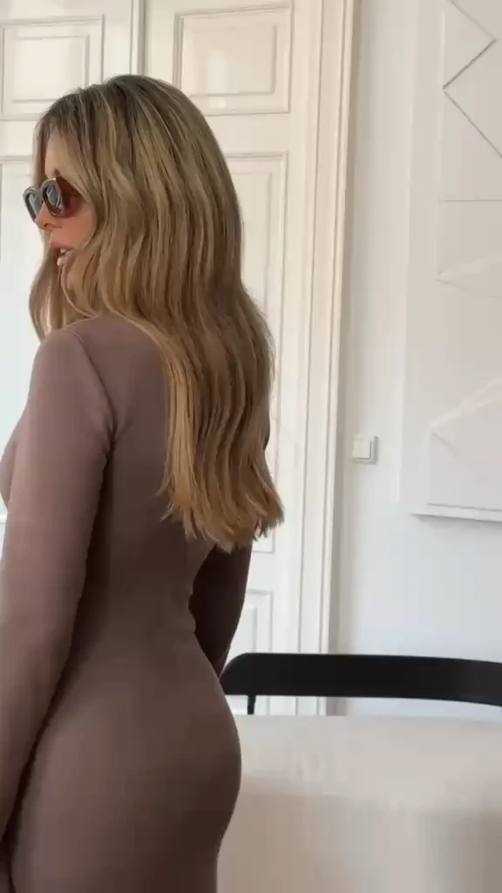
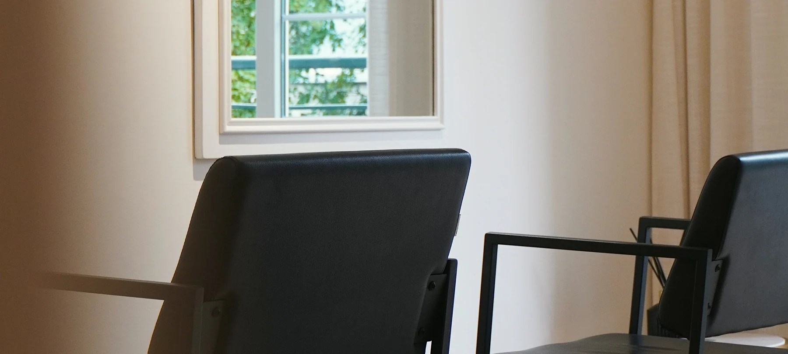
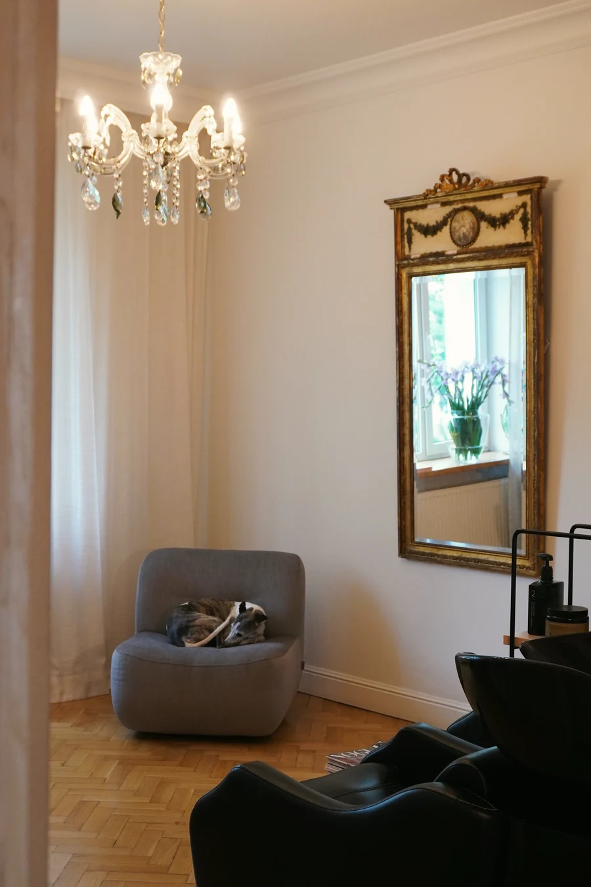
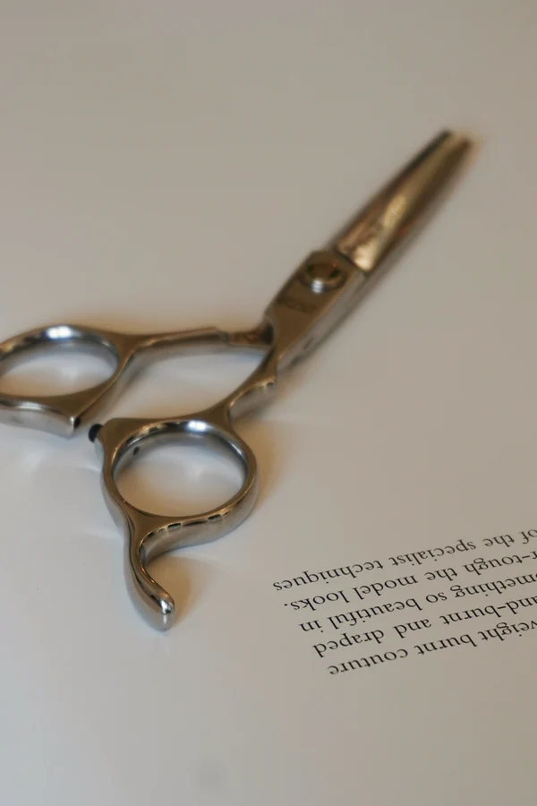

Pięknie być sobą.

Salon fryzjerski na Mokotowie. Blondy, refleksy i koloryzacja.
Poznaj Sylwię
Nazywam się Sylwia Habdas.
Od ponad dwudziestu lat tworzę fryzury dla kobiet, które cenią naturalność, jakość i ponadczasowy styl.
Moja droga zaczęła się od pracy przy sesjach zdjęciowych, pokazach mody i produkcjach telewizyjnych. To właśnie tam nauczyłam się patrzeć na włosy jak na część całego wizerunku.
Przez lata miałam przyjemność stylizować włosy wielu wyjątkowym kobietom. Wśród nich były Ania Wyszkoni, Małgorzata Rozenek Majdan, Maryla Rodowicz, Edyta Górniak, Halina Mlynkova, Doda, Martyna Wojciechowska i Bogna Sworowska.

Własne miejsce
Mimo pracy przy dużych produkcjach i z osobami znanymi od zawsze marzyłam o własnym miejscu. Chciałam stworzyć salon, do którego kobiety będą przychodziły nie tylko po piękne włosy, ale również po spokój, dobrą atmosferę i poczucie, że ktoś naprawdę poświęca im czas.


Nieustannie rozwijam swój warsztat, szkolę się i inspiruję najlepszymi markami oraz światowymi trendami we fryzjerstwie i pielęgnacji. Wierzę, że aby tworzyć rzeczy ponadczasowe, trzeba stale podnosić sobie poprzeczkę i czerpać inspiracje od najlepszych.
Tak powstał
mój salon.
Kameralna przestrzeń inspirowana paryskim stylem, gdzie liczy się jakość, doświadczenie i dbałość o każdy szczegół. Wierzę, że prawdziwa elegancja nie potrzebuje rozgłosu. Jest widoczna w sposobie pracy, w relacji z klientką i w efekcie, który wygląda naturalnie i pozostaje piękny przez długi czas.
Specjalizuję się w blondach, refleksach i koloryzacjach, które podkreślają urodę, a nie ją zmieniają. Każdą wizytę zaczynam od rozmowy, ponieważ wierzę, że najpiękniejsza fryzura to taka, w której kobieta czuje się sobą.
Zapraszam Cię do mojego świata.
Miejsca stworzonego z pasji, doświadczenia i nieustannego dążenia do najwyższej jakości.
Na górę